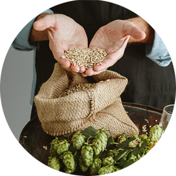
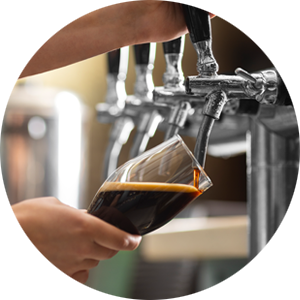
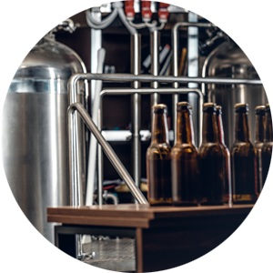

브랜드 소개
장인이 만든 최고의 수제맥주 VAX BEER
VAX BEER 수제맥주는 국내 최초의 미국식 수제맥주 양조장입니다. 오랜 양조경험을 가진 캐나다, 미국, 스코틀랜드 수제맥주 전문가들이 모여 브루펍으로 시작한
VAX BEER 수제맥주는 전국 주요 지역에 프랜차이즈 가맹점을 두고 있으며, 명실공히 대한민국을 대표하는 수제맥주로 자리를 잡았습니다.
VAX BEER 수제맥주는 전국의 더 많은 분들께 좋은 품질의 신나는 수제맥주를 제공하기 위해 끊임없는 노력을 기울이고 있습니다.

최상의 재료

정직한 재료

제품의 일관성
오시는길
장인이 만든 최고의 수제맥주 VAX BEER
서울시 영등포구 당산동 1234-4567 고객센터 02-1234-6789
VAX BEER 수제맥주는 맑은 물 한강수로 만들어집니다.